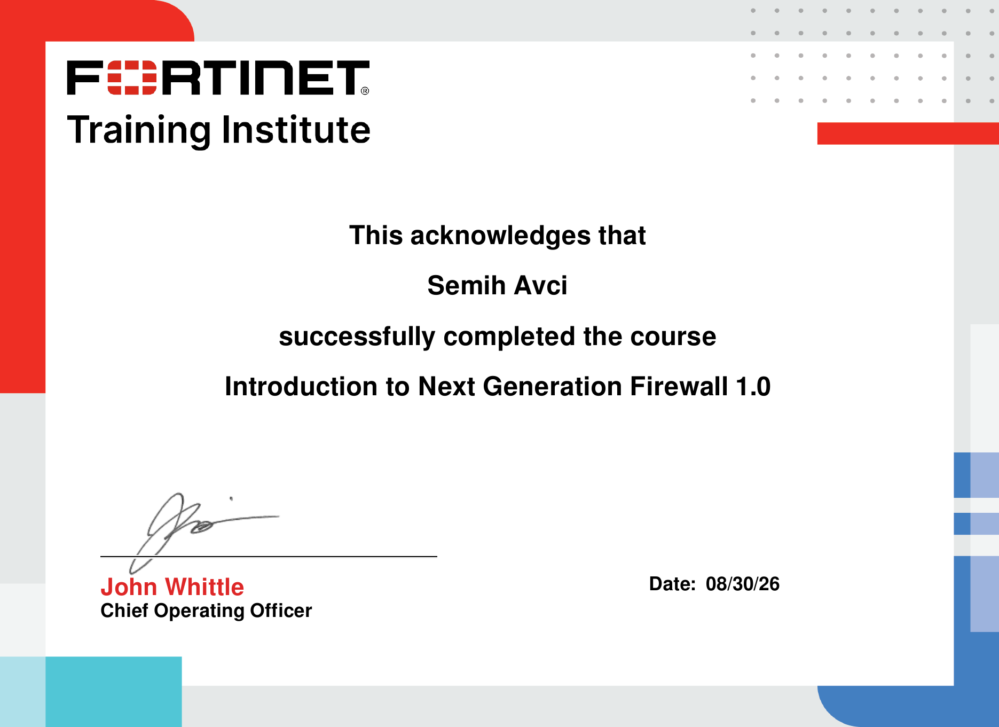

Vue d'ensemble
Fortinet NSE
Progression validée
2 cours Fortinet réussis
NSE 1
NSE 2
Ouvrir le PDF ↗
NSE 1
29 août 2026
Fortinet Training Institute
Cybersecurity and Cloud Fundamentals 1.0
Formation consacrée aux notions fondamentales de cybersécurité et de cloud, première étape de ma progression dans le parcours Fortinet.
Cybersécurité
Cloud
Fondamentaux
Voir le certificat ↗

Ouvrir le PDF ↗
NSE 2
30 août 2026
Fortinet Training Institute
Introduction to Next Generation Firewall 1.0
Introduction au pare-feu de nouvelle génération et à son rôle dans la sécurisation des réseaux, en continuité directe avec les fondamentaux acquis.
NGFW
Sécurité réseau
Fortinet
Voir le certificat ↗